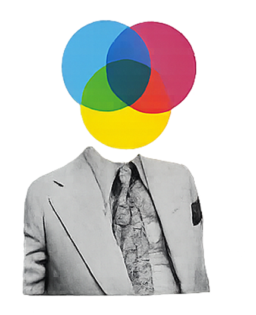
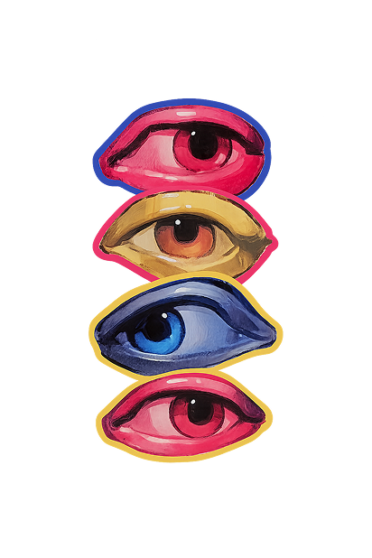
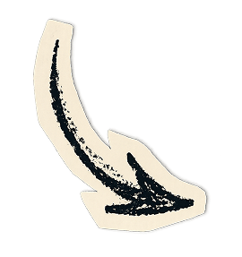
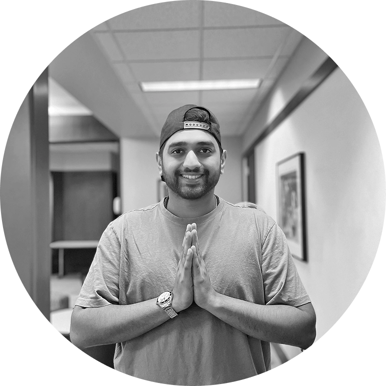
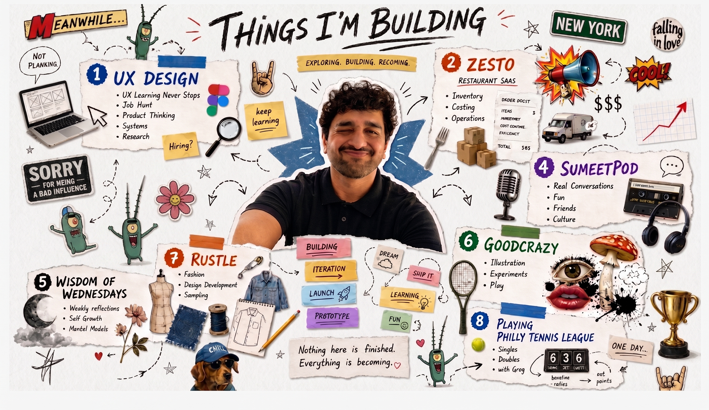

a little about me

I started in industrial and product design at MIT Institute of Design in Pune. Ergonomics, CMF, packaging, things you can hold. That's still how I think about software. What does this thing want you to do, and how much effort does it charge you for doing it?
The route from there ran through branding and packaging at a Mumbai studio, a mental-health app at a healthcare startup, and a master's in UX and Interaction Design at Thomas Jefferson University. Along the way the interesting problem stopped being how something looked and became where people get stuck deciding. A buyer several pages into a configurator, a chef holding a paper prep list, someone opening a meditation app at 11pm and closing it again.
That's the work I want. Systems with real constraints, where the win is measured in decisions people no longer have to labour over.
A good part of how I get there now is AI-assisted. I use Base44 and Claude to stand up a working version of an idea in hours instead of days, so an assumption gets tested against something real rather than argued about in a review. Despia turns those prototypes into something installable, and GitHub keeps the versions honest.
None of that replaces the thinking. It lowers the cost of being wrong, which means I can afford to be wrong earlier and more often, where it is cheap.
Outside of work there's a podcast running since 2020, twenty years of tennis, and a daily meditation practice that is the honest reason Nirvana exists.



some of things I do
Design and research: Figma · Adobe XD · Illustrator · Photoshop · InDesign · SolidWorks
Prototyping and shipping: Base44 · Claude · Despia · GitHub · HTML/CSS
